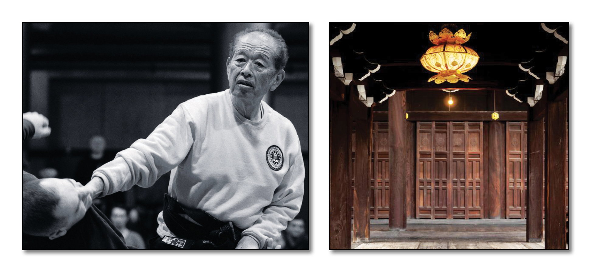

"Hiding Behind the Door School" - Dr. Hatsumi is the 34th Soke
Overview:
This ryu forms much of the basis for the Ninjutsu techniques taught in the Bujinkan and is our second oldest school in the nine traditions. Togakure Ryu Ninpo includes various punching, throwing and levering techniques. It is known by low and wide stances and also by very strong punches, which are mostly directed towards opponent’s eyes, ears and diaphragm. This system is famous for its use of such weapons as shuko and shuriken. The emphasis of this ryu is on escape and spying. Ninjutsu involves the use of specialized weapons, espionage, concealment, sabotage, breaking in and escaping, etc. Togakure ryu uses a lot of techniques that incapacitate, often brutally, and is very deceptive. Along with Taijutsu, this school includes arts such as Ken jutsu (sword), Shuriken jutsu (thowing blades), Shuko (hand claws), Metsubushi (blinding powders) and Shindake (bamboo tube for breathing under water). A large part of this school teaches how to use the elements and nature as weapons such as in Ka jutsu (fire arts) and Sui jutsu (water arts). This school also includes various acrobatics, methods of walking silently, and ways of running up steep inclines. Daisuke Togakure founded this ryu in the late 1100′s.
Eighteen Fundamental Skills:
Soke of Togakure Ryû:
Ikai
Hogenbo
Sakabe, Tendo
Hachiryu, Nyodo Tenei era 1110
Kimon, Hyobei Ninpei era 1151
Kasumigakure, Doshi